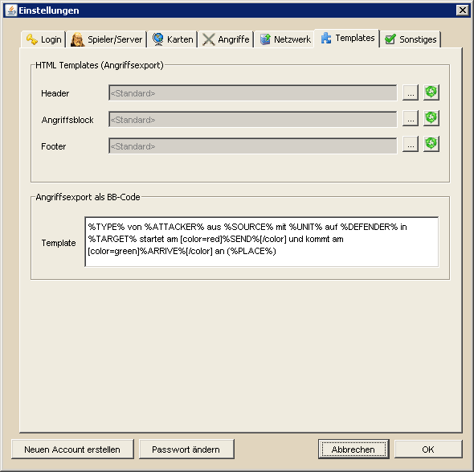

Templateeinstellungen |
| |
|  |
| |
Diese Einstellungen sind eher für fortgeschrittene DS Workbench Benutzer gedacht. Hier könnt ihr einzelne Ausgaben von DS Workbench nach belieben konfigurieren. Im oberen Bereich könnt ihr die Template-Dateien einstellen, die für den HTML-Export von Angriffsplänen verwendet werden. Aufgrund der Komplexität der Templates wird darauf in diesem getrennten Bereich eingegangen. Die grünen Buttons auf der rechten Seite dienen dazu, für die einzelnen Blöcke wieder die Standardtemplates zu verwenden.
Im unteren Bereich kann der BB-Export von Angriffen den eigenen Wünschen angepasst werden. Hierfür stehen verschiedene Variablen zur Verfügung, die mit im Spiel verfügbaren BB-Codes beliebig kombiniert werden können. Im folgenden werden die verfügbaren Variablen erklärt: |
| |
| %TYPE% |
Art der Truppenbewegung (z.B. 'Angriff (Clean-Off)' oder 'Unterstützung') |
| %ATTACKER% |
Angreifender Spieler als BB-Code |
| %SOURCE% |
Herkunftsdorf des Angriffs als BB-Code |
| %DEFENDER% |
Verteidigender Spieler als BB-Code |
| %TARGET% |
Zieldorf des Angriffs als BB-Code |
| %UNIT% |
Langsamste Einheit des Angriffs |
| %SEND% |
Abschickzeit des Angriffs |
| %ARRIVE% |
Ankunftszeit des Angriffs |
| %PLACE% |
Link zum Versammlungsplatz des angreifenden Dorfes mit eingetragenem Zieldorf (mit [url]-BB Code) |
| %PLACE_URL% |
Link zum Versammlungsplatz des angreifenden Dorfes mit eingetragenem Zieldorf (ohne [url]-BB Code) |
|
| |
| Wie erwähnt und wie im oberen Screenshot zu sehen können die bekannten BB-Codes wie gewohnt verwendet werden. Für Angreifer, Verteidiger und die beteiligten Dörfer müssen keine separaten BB-Codes verwendet werden, da sie direkt mit den zugehörigen Codes versehen werden. |
| |
|
Wie bei vielen Exports gibt es zwei mögliche Arten des Exports. Die erweiterte Art arbeitet standardmäßig mit dem img- und dem size-Tag, die z.B. für IGMs nicht verfügbar sind. Fügt ihr diese BB-Codes manuell in das Template ein werden diese NICHT mehr überprüft, werden also sowohl für den einfachen als auch für den erweiterten Export verwendet, können aber in IGMs nicht verarbeitet werden. |